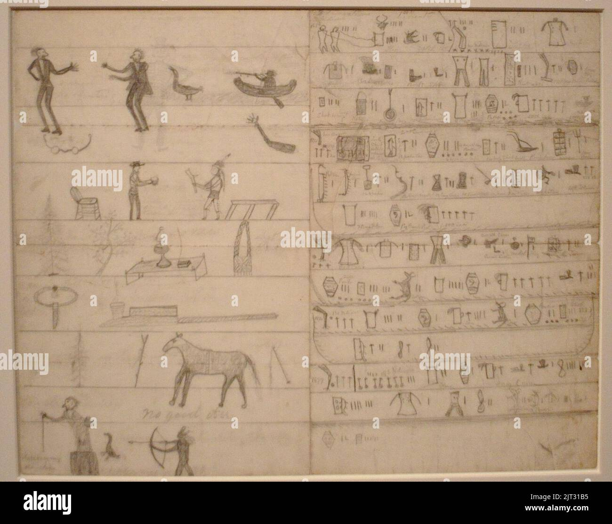

Welcome to Treaty 4
About Our Treaty
Treaty 4 covers most of Southern Saskatchewan, Western Manitoba, and Eastern Alberta, and the first signings happened at Fort Qu’Appelle in 1874. Other locations where bands signed the treaty at are Fort Ellice, Swan Lake, Fort Pelly, and Fort Walsh. The treaty was signed between the Canadian government and the First Nations, and it was meant to build peaceful relationships and determine the rights and responsibilities of both sides.

Who Signed?
Many First Nations communities signed to Treaty 4, including:
- Cree Tribal Council
- West Region Tribal Council
- File Hills Qu’Appelle Tribal Council
- Saskatoon Tribal Council
- Touchwood Agency Tribal Council
- Yorkton Tribal Administration
